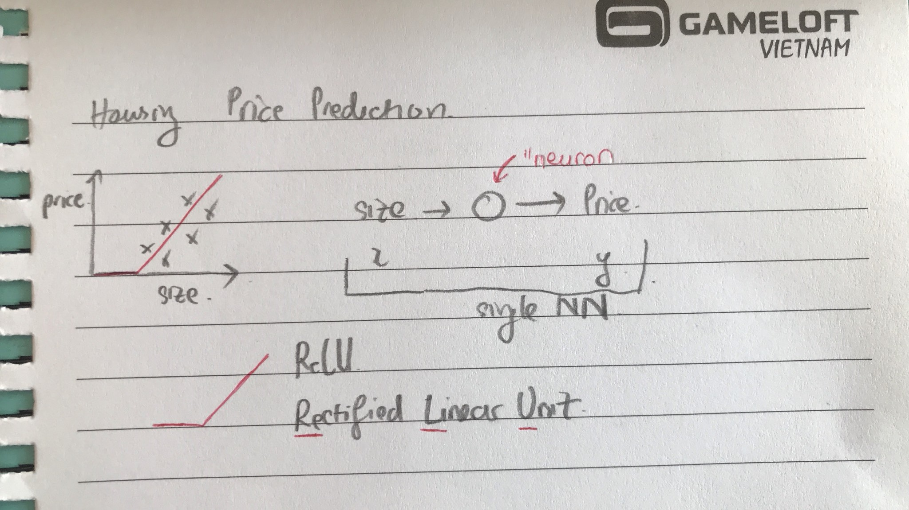
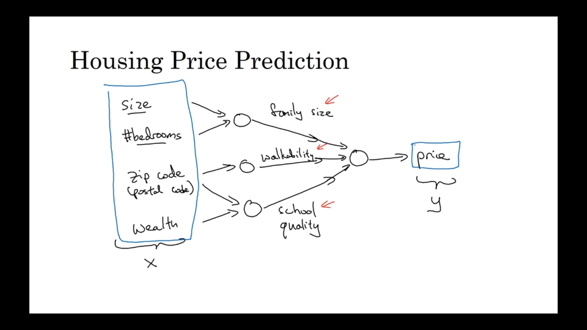
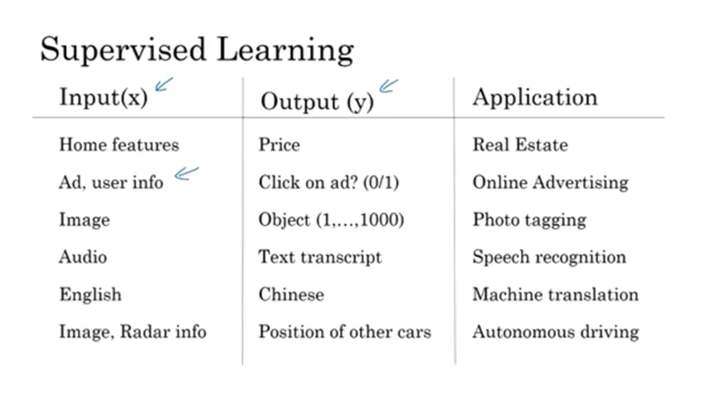
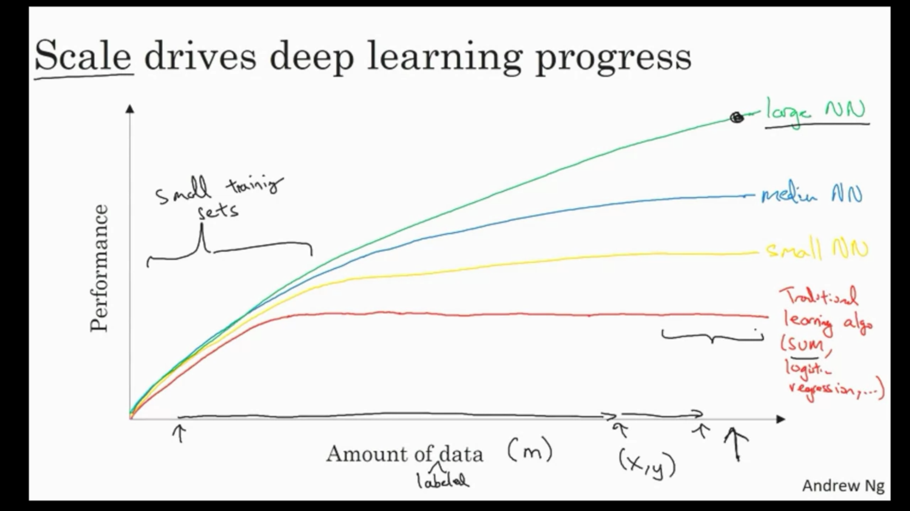
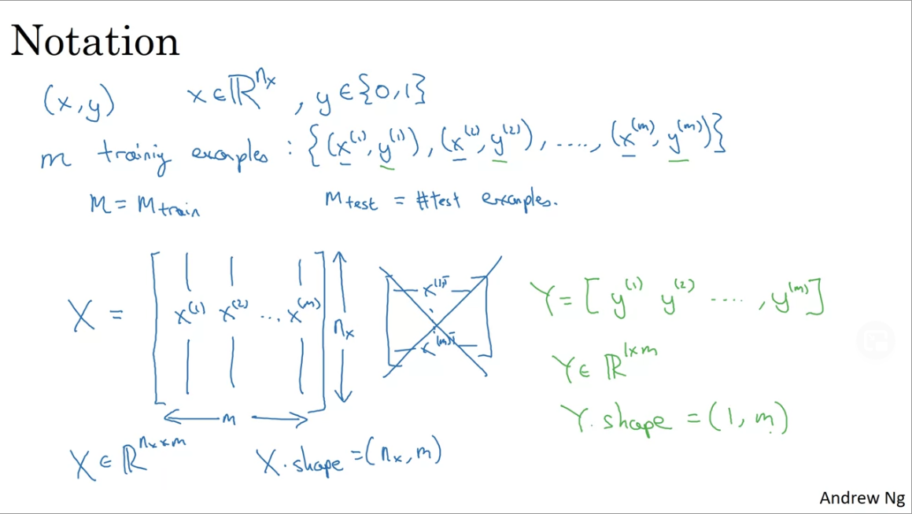
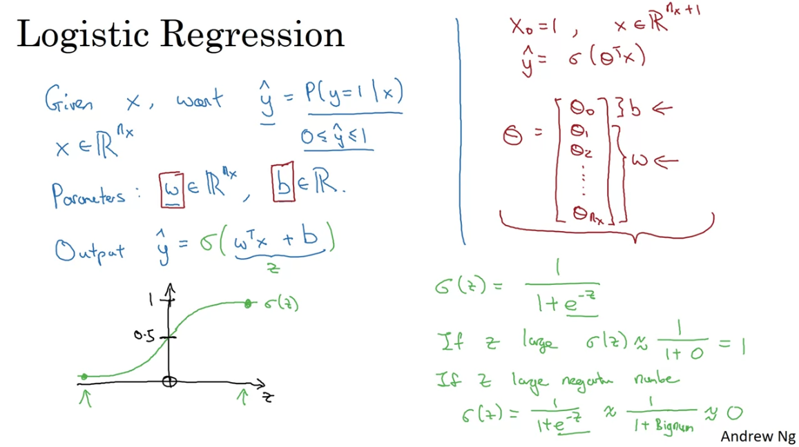

Deep Learning - Andrew Ng
Welcome
- AI is the new Electricity
- Electricity had once transformed countless industries: transportation, manufacturing, healthcare, communications, and more
- AI will now bring about an equally big transformation.
What you’ll learn Courses: 1. Neural Networks and Deep Learning: Build NN and train data 2. Improving Deep Neural Networks: Hyperparameter tuning, Regularization and Optimization 3. Structuring your Machine Learning project: best practices for this topic 4. Convolutional Neural Networks 5. Natural Language Processing: Building sequence models (RNN, LSTM)
Neural Networks and Deep Learning
Week 1
Introduction to Deep Learning
- What is Neural Networks?

a larger neural network is formed by taking many of single neural networks and stacking them together.

- input x will be (size, #bedrooms, zip code, wealth).
- output y is price
- while family size, school quality,… are called hidden units.
Remark: - given enough training examples with both x and y, NN are remarkably good at figuring out functions that accurately map from x to y. - every input layer feature is interconnected with every hidden layer feature.
- Supervised Learning with Neural networks In supervised learning, you have some input x, and you want to learn a function mapping to some output y.

It turns out that different neural networks are useful for different applications
For examples, - Real Estate, Online Advertising: universally standard NN - Image applications: CNN - Sequence data (Audio): RNN - Language: more complex versions of RNN - Autonomous driving: Custom/Hybrid NN
based on the characteristics of data
Structured and Unstructured Data: - Structured: has well-defined meaning - Unstructured: refers to audio, images, texts. One of the most exciting things about the rise of the NN is that, computers are now much better at interpreting unstructured data compared to just a few years ago.
But it turns out that a lot of short term economic value that NN are creating are also been on structured data, such as much better advertising and recommendation systems.
Summary: NN has transformed supervised learning and are creating tremendous economic values.
- Why is DL taking off?
Main drivers behind the rise of DL Scales drives DL progress: - Data - Computation - Algorithms
With small training sets, performance depends much more on your skill at engine features and other details of the algorithm. With large training sets, more consistently see the large NN dominating the other approaches.

One of the huge breakthroughs in NN has been switching from a sigmoid function to a ReLU function.
Because one of the problems of using sigmoid function in machine learning is that these regions where the slope of the function gradient is nearly zero and so learning becomes really slow, whereas by changing the activation function, the gradient is equal to one for all positive values of input and so the gradient is much less likely to shrink to zero.
Switching to ReLU has caused the gradient descent work much faster.
Career Advice: Geoffrey Hinton - Read the literature but don’t read too much of it. - Never stop programming.
Week 2
Logistic Regression on a Neural Network
Purpose - Some important technique when implementing neural network. - Computation of neural network: forward propagation step and backward propagation step - Why the computation, the learning an neural network can be organized in this forward and backward propagation.
- Binary Classification:
We need to convert the image into feature vector X, i.e. for 64*64 images, x has the dimension of 64 x 64 x 3 = 12288
and predict whether the corresponding label y is 1 or 0,
Notation: - A single training example is represented by a pair (x, y) - m training examples - M_train and M_set for number of training and testing examples.

- Logistic Regression A learning algorithm that you use when the output labels y in a supervised learning problem is either 1 or 0.
